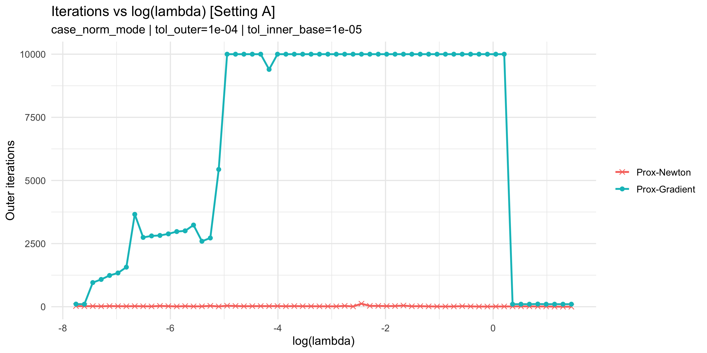
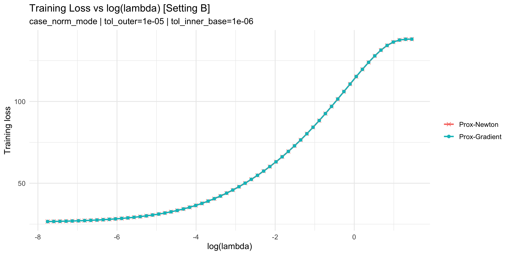
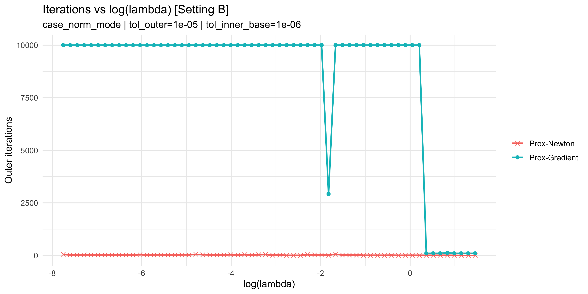

Simulation Study Report (case_norm_mode)
Generated at: 2026-03-05 19:24:22 CST
Settings
- Setting A: tol_outer=1e-04, tol_inner_base=1e-05, tol_inner_floor=1e-08
- Setting B: tol_outer=1e-05, tol_inner_base=1e-06, tol_inner_floor=1e-08
- Stopping mode: case_norm_mode (PN: local_norm, PG: l2_step_norm)
All Plots
Training loss (Setting A)
Iterations (Setting A)

Training loss (Setting B)

Iterations (Setting B)

Computation Time + Tolerance Record
| setting_id | tol_outer | tol_inner_base | tol_inner_floor | pn_total_elapsed_sec | pg_total_elapsed_sec |
|---|
| A | 1e-04 | 1e-05 | 1e-08 | 109.1429 | 188.4749 |
| B | 1e-05 | 1e-06 | 1e-08 | 181.3363 | 250.4709 |